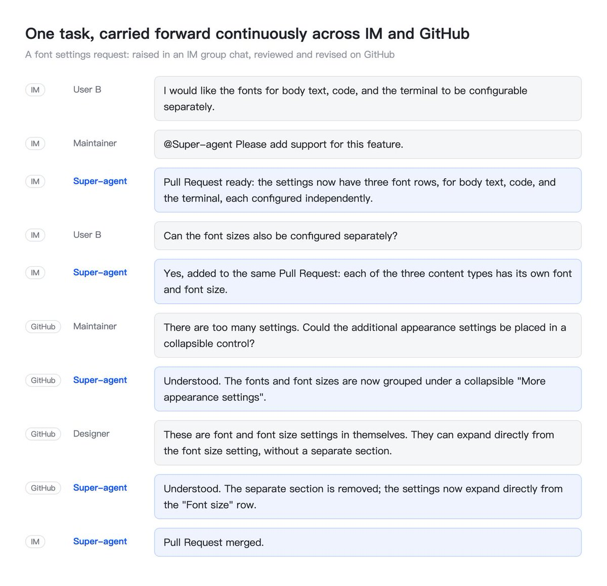
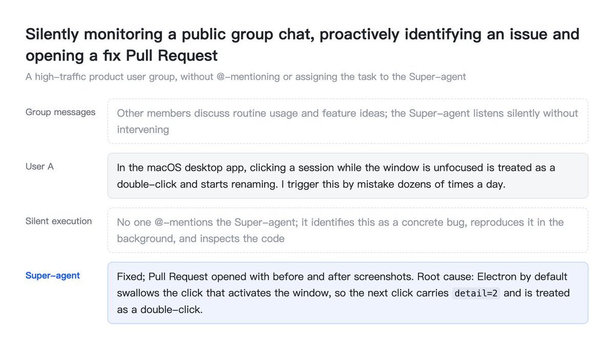
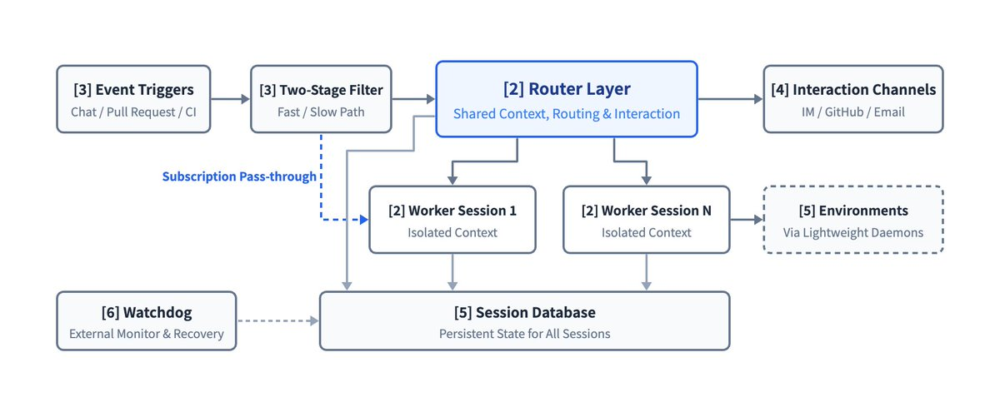
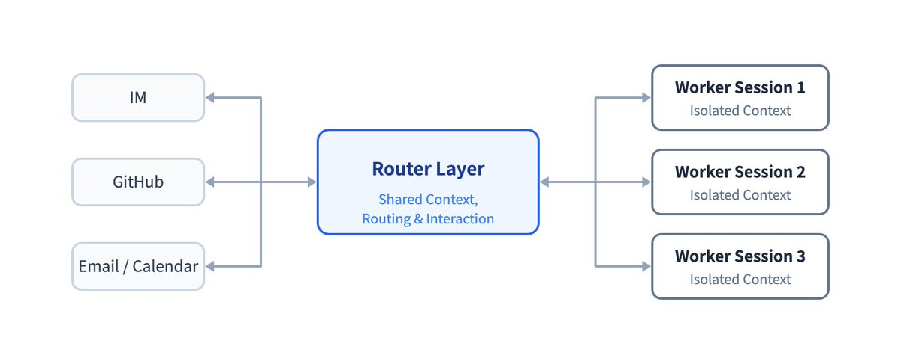
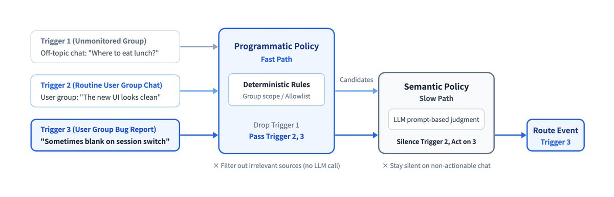
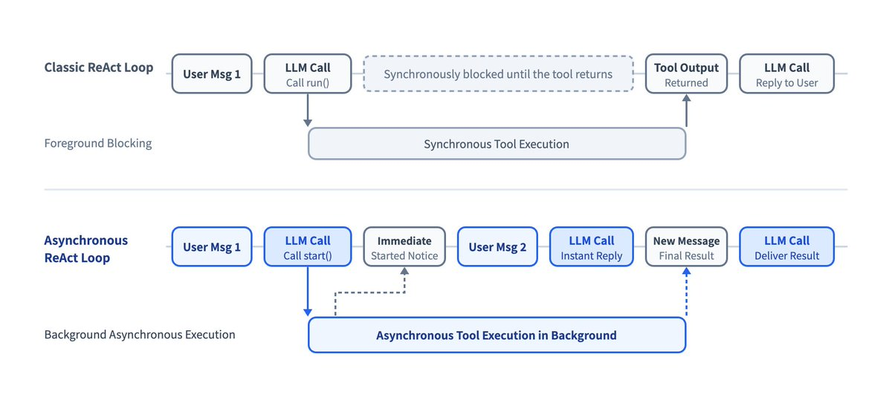

DeepSeek Harness
@DeepSeekHarness
Оригинал статьи написан на китайском языке. Англоязычная версия, с которой сделан этот перевод, — машинный перевод.
В этой статье обсуждаются архитектурные идеи. Это не обзор существующих возможностей DeepSeek Harness.
1. Суперагент
За последний год агенты для программирования и другие агенты, работающие над одной задачей, показали, что модели могут использовать инструменты для решения сложных проблем, требуя всё меньше постоянного контроля и пошагового вмешательства человека. Модели также научились лучше координировать нескольких агентов, что позволяет на практике организовывать и планировать работу между сессиями. По мере того как люди всё меньше участвуют в непосредственном выполнении работы, их роль постепенно смещается к принятию решений более высокого уровня и утверждению результатов.
Улучшение моделей также открыло возможности для новых применений. В последнее время появилось много персональных агентов. Они напрямую подключаются к повседневным мессенджерам, календарям, электронной почте и рабочим платформам, следят за потоком событий и помогают с задачами. Персональные агенты — лишь одно из применений такого постоянно работающего, управляемого событиями подхода. Он полезен не только для личных задач, но и в коммерческой работе, например при разработке ПО.
Однако распространённым сегодня архитектурам агентов трудно поддерживать такой способ работы для множества задач или целой команды. Базовой единицей работы агента по-прежнему остаётся отдельная сессия, а сессии изолированы друг от друга. Пользователю, который ведёт несколько задач параллельно, приходится вручную переключаться между сессиями и помнить, что находится в каждой из них. По нашему опыту, человек обычно может одновременно следить лишь за 3–5 активными сессиями. В таких архитектурах выполнение одной задачи ограничено возможностями модели, а параллельная работа над несколькими — вниманием человека.
Если добавить CLI, MCP или внешние коннекторы к существующему локальному агенту с одной сессией, он сможет получать внешние сообщения, но основные ограничения останутся. Он по-прежнему работает в одной синхронной сессии, которая блокируется на длительных операциях, контекст разных задач смешивается, а когда локальное устройство отключается от сети, всё останавливается. Поддержание такой системы требует большой ручной работы.
Чтобы преодолеть эти ограничения, нужно отвязать агента от отдельной сессии, управляемой вручную. Вместо этого агент должен быть единой непрерывно работающей сущностью, которая сохраняет контекст между сессиями и одновременно выполняет несколько сложных задач так, чтобы они не мешали друг другу. Такого агента и архитектуру его системы мы называем суперагентом.
Например, наш внутренний экземпляр суперагента на DeepSeek Harness может продолжать одну и ту же задачу разработки в мессенджере и на GitHub. Он также отслеживает обратную связь в публичных групповых чатах и, даже когда его не упоминают через @, самостоятельно находит первопричины проблем и открывает pull request для их исправления:


Мы считаем, что у суперагента есть четыре основных свойства:
- Непрерывность. Пользователи могут общаться с ним непосредственно там, где уже работают, например в чатах мессенджера и комментариях GitHub, и он всегда воспринимается как один агент. Им не приходится думать, есть ли информация Y в контексте сессии X. Например, если пользователь просит выполнить план А в мессенджере, а позже переходит к плану Б в комментарии к pull request на GitHub, агент понимает изменение и корректирует свою работу.
- Продуктивность. Он быстро отвечает и параллельно выполняет несколько сложных задач, каждую на высоком уровне. Он может принять следующую инструкцию до завершения предыдущей команды или задачи.
- Проактивность. Он не ждёт пошаговых инструкций. Он следит за событиями в своей среде, реагирует на то, что заслуживает внимания, и в остальных случаях молчит.
- Постоянная доступность. Он всегда онлайн, напрямую подключается к реальным рабочим средам пользователя и автоматически восстанавливается после сбоев при длительной работе.
Ни один отдельный цикл ReAct не может обеспечить все четыре свойства одновременно, поэтому их должна обеспечивать окружающая его архитектура системы. Схожие ограничения при проектировании обычно приводят к схожим архитектурам. Когда цель — постоянно работающая система, которая параллельно реагирует на события среды, мы ожидаем, что персональные агенты и агенты для коммерческой работы, например разработки ПО, в итоге будут устроены похоже. При построении такой системы возникает и много проблем, давно изучаемых в области компьютерных систем, поэтому здесь применимы многие классические идеи из этой области.
Реализации будут различаться, но мы считаем, что базовую структуру, обеспечивающую эти свойства, образуют пять модулей. Двухуровневая архитектура (раздел 2) обеспечивает и непрерывное взаимодействие, и продуктивное параллельное выполнение задач. Событийная архитектура (раздел 3) делает агента проактивным. Полнодуплексное многоканальное взаимодействие (раздел 4) делает каждый обмен с пользователем непрерывным и продуктивным. Разделение вычислений, состояния и сред (раздел 5) вместе со сторожевым агентом Watchdog (раздел 6) позволяет агенту постоянно оставаться онлайн при работе с разными устройствами и самостоятельно восстанавливаться после сбоев.
Схема ниже даёт общее представление об архитектуре суперагента. Модули, обозначенные числами от [2] до [6], рассматриваются в разделах 2–6:

2. Двухуровневая архитектура
Чтобы одновременно обеспечить непрерывное взаимодействие через разные каналы и продуктивное параллельное выполнение задач, при организации сессий приходится искать принципиальный компромисс между непрерывностью и пропускной способностью.
Направление всех событий в одну сессию обеспечивает максимальную непрерывность контекста, потому что эта сессия видит всё. Но цикл ReAct выполняет шаги последовательно, что ограничивает скорость работы одной сессии: задачи занимают много времени, а пропускная способность остаётся низкой. Промежуточные детали разных задач также перемешиваются в одном контексте, что ухудшает результаты.
Если же создавать для каждого события отдельную новую сессию, компромисс меняется на противоположный. Это максимизирует пропускную способность при параллельной работе, но, когда задачи не полностью независимы, отсутствие общего глобального контекста делает их результаты несвязанными. Кроме того, отдельные ответы пользователю от нескольких сессий создают путаницу.
Чтобы получить и непрерывность, и пропускную способность, можно разделить работу между двумя уровнями. Долгоживущий уровень маршрутизатора Router (раздел 2.1) поддерживает глобальную непрерывность, отвечая за всё взаимодействие с людьми и общую координацию, а уровень исполнителей Worker с изолированными контекстами (раздел 2.2) выполняет задачи с высокой степенью параллелизма, как показано ниже:

При двухуровневой архитектуре система берёт на себя управление контекстом и параллельное выполнение, поэтому пользователям редко приходится думать о сессиях: они всегда работают с одним и тем же суперагентом. Таким образом, необходимость вручную управлять сессиями — во многом привычка проектирования, унаследованная от низкоуровневых API языковых моделей. Сессии должны быть деталью реализации системы, а не дополнительной заботой пользователей.
В существующих архитектурах сессия выполняет две функции: управляет контекстом модели и служит пользователю единицей управления проектом. Когда продукт отвязан от лежащих в его основе сессий, управление проектом больше не обязано следовать их границам. Вопрос о том, какое взаимодействие и управление задачами предложить пользователю, становится отдельным продуктовым вопросом, к которому мы ещё вернёмся.
Два уровня — это логическое разделение обязанностей. Ни один из них не обязательно реализовывать в виде одной сессии, и каждый может иметь собственную внутреннюю структуру. В следующих двух подразделах мы по очереди рассмотрим оба уровня.
2.1 Уровень Router
Уровень Router — это долгоживущий уровень глобальной маршрутизации, который принимает обращения людей из всех точек входа. Здесь сходятся вся информация и решения, относящиеся к нескольким задачам, поэтому он служит глобальной точкой упорядочивания, координации и памяти системы. Чтобы этот единый глобальный узел не стал узким местом, Router спроектирован так, чтобы не выполнять задачи самостоятельно. Он только взаимодействует с людьми и распределяет задачи и может работать вообще без инструмента Bash.
Благодаря центральному узлу, который распределяет задачи между несколькими узлами исполнения, эта структура похожа на обычную команду агентов (Agent Team), но их назначение различается. Команда агентов обычно разбивает одну сложную задачу на этапы и координирует работающие над ними роли. Поскольку эти этапы, как правило, тесно связаны, руководителю команды часто приходится глубоко разбираться в задаче, планировать подзадачи и регулярно координировать участников, что создаёт большую нагрузку на рассуждение. В суперагенте уровень Router только распределяет задачи и отслеживает связи между ними на высоком уровне. Он не разбивает отдельные задачи на части. И наоборот, команда агентов тоже может работать как двухуровневая архитектура. Для этого её промпты должны запрещать основной сессии самостоятельно выполнять задачи и ограничивать её внешним взаимодействием и распределением отдельных задач между участниками, которые работают независимо. По нашему опыту, работа уровня Router часто оказывается проще, чем можно ожидать, и более лёгкая модель обычно может обеспечить и скорость, и качество.
Внутри уровень Router тоже не обязательно должен состоять из одной сессии, а для части его логики LLM может вообще не понадобиться. Мы выбрали самый прямой вариант — одну долгоживущую сессию LLM — и обнаружили, что она с меньшей вероятностью станет узким местом по пропускной способности, чем может показаться. Причина в том, что события среды (триггеры из раздела 3), поступающие во время одного шага инференса, ставятся в очередь и обрабатываются вместе на следующем шаге. Так возникает пакетная обработка, а совместная обработка событий почти не создаёт дополнительных накладных расходов:
- Когда внешние события поступают равномерно, триггеры приходят в сессию Router по одному, и каждый ответ возвращается быстро.
- Когда события поступают всплесками и начинают скапливаться в очереди сессии Router, триггеры, накопившиеся за предыдущий шаг, автоматически объединяются и вместе передаются при следующем вызове LLM. Поскольку сессия Router занимается только лёгким взаимодействием и распределением задач, каждый шаг обычно содержит длинный ввод и короткий вывод. Триггеры, объединённые в одном вызове API модели, вычисляются параллельно на этапе Prefill, поэтому время запроса растёт значительно медленнее размера пакета. Таким образом, до определённого предела чем больше накопившаяся очередь, тем меньше амортизированное время инференса на одно решение. Этот предел зависит от длины контекста и от того, сколько триггеров модель способна точно обработать за один шаг.
В разделе 7.2 эффект пакетной обработки количественно оценивается в эксперименте. В сочетании с подпиской и прямой передачей событий (раздел 3.2) и механизмом Chain of Recall (раздел 3.3) одной долгоживущей сессии Router достаточно, чтобы сохранять непрерывность контекста для команды нашего нынешнего размера.
Если система вырастет настолько, что одна сессия действительно перестанет справляться, внутри уровня Router можно использовать многоступенчатую фильтрацию или разделить его на несколько сессий с помощью горизонтального шардирования. Тогда его внутреннее устройство снова сведётся к компромиссу между непрерывностью и пропускной способностью. Чем мельче шарды, тем выше параллельная пропускная способность уровня Router, но тем меньше общей памяти и контекста между ними. Этот компромисс сохранится до тех пор, пока не будет решена проблема глобальной памяти.
2.2 Уровень Worker
Уровень Worker состоит из сессий, выполняющих задачи. У каждого исполнителя изолированный контекст и полный набор инструментов исполнения, и каждый занимается одной задачей. Сессии Worker непосредственно определяют результат каждой задачи и качество её кода, поэтому обычно им нужны наиболее сильные модели.
Исполнители никогда не общаются с людьми напрямую. Их процесс рассуждения и вызовы инструментов не попадают во внешние каналы. Вместо этого каждый исполнитель сообщает свой статус уровню Router, который отвечает за все ответы пользователю. Так система сохраняет и параллелизм, и качество результатов, не создавая путаницы из-за отдельных ответов нескольких сессий.
При параллельном выполнении каждый исполнитель работает над своей задачей, и обычно исполнителям одного уровня не нужно общаться напрямую. Конфликты между ними, как правило, возникают в общей рабочей среде, например в одном pull request. Если все вовлечённые исполнители подписаны на тред этой среды, они получают одинаковые уведомления о событиях (раздел 3.2) и могут самостоятельно обнаружить и разрешить конфликт. Уровень Router передаёт информацию в тех немногочисленных случаях, когда требуется координация между задачами.
Как и уровень Router, исполнитель внутри себя не обязательно состоит из одной сессии. Для сложной задачи он может создавать субагентов или сам быть командой агентов; для вышестоящего уровня Router это прозрачно. Та же структура подходит для совместной работы с кодом, где независимые задачи — воспроизведение ошибок, ревью pull request и разработка функций — могут идти одновременно, не блокируя друг друга. Она подходит и для персональных агентов, хотя у них обычно есть лишь одна страница чата. Когда пользователь обсуждает в этом чате несколько тем одновременно, страница сохраняет непрерывность разговора. Тем временем серверная часть может назначить отдельного исполнителя для каждой темы, чтобы параллельно работать над задачами и готовить черновики ответов.
3. Триггеры, управляемые событиями
Чтобы сделать суперагента проактивным, сначала нужно изменить то, что приводит систему в действие. Основной вход агента — уже не промпты, которые человек по одному вводит в сессию, а полуструктурированные события из среды. В суперагенте такие события среды, как сообщения групповых чатов, электронные письма, напоминания календаря, комментарии при ревью кода и результаты CI, называются триггерами. Поскольку агент слушает триггеры и реагирует на них, ему больше не нужно ждать команды человека перед каждым запуском, как агенту с одной сессией.
Следующие подразделы описывают путь события среды от поступления до обработки в четыре последовательных этапа. Сначала двухступенчатые политики, сочетающие код и модели, отфильтровывают большой объём шума (раздел 3.1). Затем механизм подписки и прямой передачи направляет события исполнителям (раздел 3.2). После этого Inline & Spill и Chain of Recall насыщают модель контекстом и извлекают дополнительные сведения по запросу (раздел 3.3). Наконец, спекулятивное выполнение позволяет агенту действовать заранее в фоновом режиме на основании сигналов среды (раздел 3.4).
3.1 Фильтрация событий
Подключившись к реальным групповым чатам и платформам разработки, система сталкивается с шумным потоком событий, среди которых доля требующих реакции низка: подавляющее большинство повседневных сообщений не требует действий агента. Если большая модель будет оценивать каждое событие с нуля, задержка и расход вычислений окажутся слишком велики. Заимствуя из компьютерных систем идею Fast Path / Slow Path, мы рассматриваем рассуждение большой модели как гибкий, но дорогой медленный путь (Slow Path). Вместо этого частые, чётко определённые и стабильные решения можно реализовать детерминированным кодом, который служит быстрым путём (Fast Path) с небольшой задержкой и низкой стоимостью.
Поэтому система сначала фильтрует каждое входящее событие. Детерминированные политики удаляют шум до вызова большой модели, и к ней попадают только события-кандидаты, для которых нужно понимание смысла. Мы используем двухступенчатую фильтрацию, сочетающую программные политики и большую модель:
- Программные политики (Fast Path). Код быстро проверяет допуск по детерминированным условиям: источнику события, группе и спискам разрешённых пользователей или ботов. Например, для каждого источника можно задать режим «отвечать только на явные запросы», «рассматривать как события-кандидаты» или «игнорировать». Эти проверки отбрасывают большинство нерелевантных сообщений до вызова модели.
- Семантические политики (Slow Path). События-кандидаты, прошедшие программные проверки, поступают в LLM, которая на основе контекста и политик, записанных в промптах, решает, нужно ли действовать. Семантический этап также служит точкой расширения на естественном языке: люди могут в любой момент включать и отключать политики или добавлять новые через промпты, как показано ниже:

3.2 Маршрутизация событий
Глобальный уровень Router из раздела 2 сохраняет непрерывность взаимодействия между каналами. Но если бы каждое последующее событие назначенной задачи тоже должно было проходить через Router, этот единый глобальный узел испытывал бы высокую нагрузку, а ответы замедлялись бы. Поэтому разделение на быстрый и медленный пути применяется и к маршрутизации отфильтрованных событий. Уровень Router обрабатывает только холодный старт новых задач и координацию между ними, а код направляет последующие события непосредственно в сессию Worker, которая отвечает за задачу.
В реальном рабочем процессе последовательные события в одном pull request на GitHub, теме мессенджера или цепочке писем образуют поток событий, который мы называем тредом (Thread):

Когда уровень Router создаёт сессию Worker для первого события треда, этот исполнитель напрямую подписывается на тред. С этого момента события направляются по одному из двух путей:
- Есть подписчик (Fast Path). Код напрямую передаёт последующие события треда подписанному исполнителю, поэтому уровню Router не нужен дополнительный вызов инструмента для их пересылки. Если новое событие выходит за рамки текущей задачи, исполнитель может отписаться или вернуть событие уровню Router для повторного распределения.
- Нет подписчика (Slow Path). Уровень Router по-прежнему видит каждое событие, что позволяет ему отслеживать глобальное состояние, но оценивает и распределяет только новые события, у которых ещё нет подписчика.

Подписки между тредами и исполнителями имеют отношение многие-ко-многим. Исполнитель может подписаться на несколько связанных тредов, а у треда может быть несколько подписанных исполнителей. Когда исполнители пересекаются в одной рабочей среде или обсуждении, каждое новое событие общего треда сразу передаётся всем подписчикам одновременно. После этого исполнители могут узнать, чем занимаются другие, и самостоятельно разрешить конфликты без прямой связи друг с другом. На выходе исполнители по-прежнему сообщают ключевые выводы уровню Router, который отвечает за все ответы пользователю и синхронизирует глобальную память.
3.3 Организация контекста
После того как событие отфильтровано и направлено в нужную сессию, возникает следующий вопрос: сколько информации поместить в контекстное окно модели. На вход поступает уже не ограниченное число промптов человека, а полуструктурированные события, которые среда непрерывно производит, поэтому организация вызовов инструментов и передачи событий становится важнее. Если передать слишком много, окно заполнится, а внимание модели рассеется. Если слишком мало, модели придётся снова и снова вызывать инструменты для чтения контекста, что добавит шаги выполнения. Тратить контекстное окно впустую — значит тратить впустую интеллект модели.
Поэтому ограниченное контекстное окно можно рассматривать как кэш. В терминах, заимствованных из оптимизации компиляторов и компьютерных систем, помещение контекста в окно сводится к двум базовым операциям. Inline помещает информацию, которая, вероятно, скоро понадобится, прямо в текущее контекстное окно, избавляя от дополнительных вызовов инструментов. Spill сохраняет полную информацию вне окна, когда она превышает доступный объём или редко используется, а в окне оставляет только ссылку или краткое описание, по которым модель может прочитать полную информацию по запросу.
В сочетании с локальностью — классической идеей проектирования компьютерных систем — Inline & Spill позволяет шаг за шагом улучшать передачу событий и вызовы инструментов:
- Начните с минимума информации. Сначала передавайте модели только ID текущего объекта и краткое описание его содержимого.
- Постепенно добавляйте связанную информацию с помощью Inline, используя локальность. Помещайте в контекст то, что модели, вероятно, скоро понадобится. Начните с ID тесно связанных объектов, затем добавьте содержимое, близкое по месту или времени. Например, первые 50 символов содержимого, сообщения мессенджера вокруг данного сообщения и то, на которое оно отвечает, а также соседние комментарии в том же обсуждении ревью кода.
- Выносите содержимое сверх лимита с помощью Spill. Для длинного содержимого, которое невозможно целиком поместить в контекст, задайте небольшой предел длины и вынесите остаток за пределы окна. Простой способ — обрезать содержимое и оставить указатель на продолжение, чтобы модель при необходимости вызвала инструмент и прочитала остальное.
У уровня Router есть собственная проблема с контекстом. Многие последующие события передаются исполнителям напрямую, а за время длительной работы прошлые задачи накапливаются, поэтому Router не может хранить полную историю каждой задачи в своём контекстном окне. И всё же, когда пользователь возвращается к старой задаче в другом канале, Router должен восстановить её контекст. Последовательное применение Inline & Spill ко всем типам объектов системы даёт механизм многошагового извлечения по запросу — Chain of Recall. Он уменьшает объём ранней информации, которую уровень Router теряет при длительной работе, как показано ниже:

Система присваивает уникальные ID таким объектам, как триггеры, треды и сессии Worker, и при передаче объекта в контекст включает ID тесно связанных с ним объектов. Эти ID связывают объекты в граф ссылок. К каждому объекту, извлечённому вызовом инструмента, также применяется Inline & Spill, поэтому возвращаемый результат включает краткие описания и ID объектов следующего шага. Начиная с текущего события, модель может переходить по этим ссылкам и шаг за шагом извлекать контекст настолько далеко, насколько ей нужно.
Например, модель может начать с треда текущего сообщения, перейти по включённому в контекст ID к связанной сессии Worker, а затем найти другой тред ревью кода, связанный с этим исполнителем.
3.4 Упреждающие действия
Мы также заимствуем из компьютерных систем спекулятивное выполнение. На основании сигналов среды агент начинает работу в фоновом режиме ещё до того, как узнает, будет ли использован её результат. Он расходует дополнительные фоновые вычисления, чтобы людям приходилось меньше ждать и реже вмешиваться. Результаты, которые оказались полезными, передаются пользователю, остальные отбрасываются.
В сценариях персонального агента при получении письма с приглашением на встречу или сообщения с задачей агент может в фоне проверить конфликты в календаре, собрать справочную информацию и подготовить черновик ответа. Пользователю останется лишь проверить черновик и отправить его. Тот же подход работает и при совместной разработке. Например, в нашей внутренней группе пользователей DeepSeek Harness мы настроили политику «молча воспроизвести и исправить». Когда кто-то сообщает о проблеме или обсуждает предлагаемое изменение, агент сначала пытается воспроизвести проблему и найти исправление в фоне. Он сообщает результат только после того, как подтвердил проблему и нашёл простое исправление. В противном случае он всё время молчит.

4. Полнодуплексное многоканальное взаимодействие
Двухуровневая архитектура из раздела 2 обеспечивает непрерывность взаимодействия между каналами на уровне контекста. Но чтобы повседневное взаимодействие было одновременно непрерывным и продуктивным, нужно решить ещё две проблемы: как оно происходит и где именно. Первая — не давать длительным фоновым операциям блокировать разговор на переднем плане. Её решает асинхронный цикл ReAct, благодаря которому сессия может принимать новые инструкции в любой момент, не дожидаясь завершения предыдущей команды или задачи (раздел 4.1). Вторая — адаптировать содержание и подробность ответов агента к каждому каналу связи и тому, как люди в нём общаются (раздел 4.2).
4.1 Полнодуплексный режим
В классическом цикле ReAct, когда модель синхронно вызывает инструмент run(), цикл блокируется до тех пор, пока инструмент не завершится и не вернёт итоговый результат. До этого момента сессия не может ответить ни на что новое от пользователя. Чтобы устранить блокировку, разговор должен перейти из пошагового полудуплексного режима в полнодуплексный, как показано ниже:

Для этого мы заменяем длительные вызовы команд и инструментов асинхронными вызовами start() и stop(), превращая цикл в асинхронный ReAct. Вызов start() сразу возвращает «Started», и цикл не ждёт завершения инструмента. Когда инструмент завершает работу в фоне, система передаёт его итоговый результат в сессию как новое сообщение о событии. В зависимости от контекста модель также может вызвать stop(), чтобы завершить слишком долго работающую фоновую команду.
Поскольку разговор на переднем плане отделён от фоновых задач, агент может отвечать людям, пока длительные задачи выполняются в фоне. Новый ввод обрабатывается сразу после завершения текущего шага инференса, а не после завершения фоновых инструментов.
В DeepSeek Harness этот механизм асинхронных задач уже реализован, но пока не включён по умолчанию.
4.2 Многоканальность
Люди по-разному общаются в групповых чатах, электронной почте и обсуждениях на GitHub. Агенту нужно адаптировать к каждому каналу и подробность, и способ ответа. Детальные рассуждения и журналы вызовов инструментов могут подойти для терминала одного пользователя, но если без изменений отправить их в групповой чат, участники могут оказаться перегружены информацией.
В суперагенте двухуровневая архитектура уже решает часть этой проблемы. Подробный процесс рассуждения и частые вызовы инструментов каждой задачи остаются внутри её сессии Worker и никогда не попадают напрямую во внешний канал, а всем внешним взаимодействием управляет уровень Router. Кроме того, системе нужно подключаться к рабочим средам, которыми пользователи пользуются каждый день, и с помощью промптов задавать нормы общения для каждого канала:
- Мессенджеры и другие каналы мгновенных сообщений. Общайтесь легко и прерывайте людей как можно реже. Как и коллега-человек, уведомляйте их только тогда, когда нужно принять решение или утвердить результат, задавайте только прямые вопросы и сообщайте краткие выводы. Одно простое и эффективное жёсткое правило, которое мы проверили, — не более 100 слов в ответе.
- Асинхронные каналы, такие как GitHub, электронная почта и документы. Предоставляйте структурированный, насыщенный информацией результат. Например, при создании или обновлении pull request подробно опишите предысторию проблемы, изменения и результаты проверки согласно принятым в проекте правилам. В сценариях персонального агента сразу готовьте структурированные письма и краткие изложения документов.
5. Разделение вычислений, состояния и сред
По умолчанию локальные агенты привязаны к одному устройству тремя составляющими: вычислениями, на которых работает цикл агента (Agent Loop), состоянием сессии, которое необходимо сохранять, и средой исполнения — например, репозиториями кода и локальными инструментами разработки. Агент останавливается, когда устройство переходит в спящий режим или отключается от сети, и не может получить доступ к средам на других устройствах. Чтобы суперагент постоянно оставался в сети и был подключён к реальным рабочим средам, необходимым для его задач, мы заимствуем из компьютерных систем принцип разделения вычислений и хранения и разъединяем эти три составляющие в два этапа. Сначала мы отделяем вычисления от состояния сессии: это освобождает агента от жизненного цикла отдельной машины и позволяет ему постоянно работать в облаке (раздел 5.1). Затем мы отделяем облачный Agent Loop от сред исполнения, содержащих много состояния. Эти среды могут оставаться там, где они находятся, а агент получает доступ к ним с разных устройств (раздел 5.2).
5.1 Разделение вычислений и состояния
Вычисления, на которых работает Agent Loop, могут не хранить состояние: сохранять нужно только состояние сессии. Поэтому на первом уровне разделения вычисления выполняются в масштабируемых облачных контейнерах без сохранения состояния, а сессии и другое постоянное состояние хранятся в базе данных. Контейнеры можно масштабировать, перезапускать или заменять, а постоянное хранилище сохраняет непрерывность сессий и задач. Если локальное устройство засыпает или отключается от сети, агент больше не останавливается: он постоянно работает в облаке.
5.2 Отделение вычислений от сред исполнения
Когда Agent Loop и состояние сессии перенесены в облако, возникает следующий вопрос: как агенту получать доступ к средам исполнения, необходимым для его задач? Значительная часть контекста, с которым работает модель, поступает из вызовов инструментов, обращающихся к репозиториям кода, локальным файлам, зависимым сервисам и другим средам исполнения. Поэтому в широком смысле контекст включает и саму среду исполнения.
Есть два распространённых подхода. Первый — запустить песочницу в облаке, загрузить код и попытаться воссоздать и синхронизировать среду. Но реальные рабочие среды часто содержат незакоммиченные локальные изменения, приватные учётные данные, зависимости от сервисов внутренней сети и специфическое оборудование или инструменты разработки. Синхронизировать всё это дорого, и что-то легко упустить. Второй подход предлагает пользователям отказаться от локальных сред и перенести работу в облако, но для многих такой переход слишком затратен.
Поскольку копировать и синхронизировать трудно именно среду, переносить её в облако вместе с Agent Loop необязательно. На втором уровне разделения Agent Loop работает в облаке, а среды исполнения с большим объёмом состояния остаются на своих местах. Каждому конечному устройству нужен только лёгкий демон: он не хранит состояние сессии и лишь выполняет команды и возвращает результаты. Среда исполнения остаётся вне облака, а агент считывает из неё контекст по мере необходимости.
В статье Anthropic «Отделяя мозг от рук» используется тот же подход: harness не хранит состояние, журналы сессий хранятся вне него, а среды исполнения подключаются по запросу через единый интерфейс. Различаются целевые сценарии. Статья Anthropic описывает управляемый сервис и в основном рассматривает песочницы, создаваемые по запросу, и ресурсы внутри VPC клиентов. Нам же в первую очередь нужно подключать личные машины, которыми люди пользуются каждый день: на них находятся незакоммиченные изменения и локальные учётные данные, а в сети они могут появляться лишь время от времени. Поэтому наша архитектура поддерживает BYOM (Bring Your Own Machine — подключение собственной машины): пользователь может подключить к облачному агенту свой компьютер для разработки или личный компьютер. Также поддерживаются облачные машины и вычислительные среды, создаваемые по запросу.
В результате агент больше не привязан к одной машине. Он может переключаться между устройствами, выполняя команды и считывая контекст в той среде, которая нужна для задачи. Он способен работать даже с устройствами, которые лишь периодически бывают в сети: когда личное устройство пользователя снова подключается, облачный агент автоматически начинает и завершает задачи, которые нужно выполнить на нём. На схеме ниже показана получившаяся структура с разделением вычислений, постоянного состояния и сред исполнения на двух уровнях:

6. Watchdog
Чтобы постоянно оставаться в сети, недостаточно разделить вычисления и хранение, как описано в разделе 5. Система также должна автоматически восстанавливаться после сбоев при длительной работе. Постоянно работающая распределённая система редко остаётся надёжной надолго, если полагается только на внутреннюю логику. Ей нужен независимый цикл управления (Control Loop) за пределами основной системы.
Агентным системам также требуется больше, чем традиционные проверки работоспособности процесса или скрипты мониторинга. Многие аномалии не связаны с падением: процесс продолжает работать, но модель застряла в непродуктивном цикле или отклонилась от цели. Поэтому система с длительно работающими агентами должна следить не только за работоспособностью инфраструктуры, но и за продвижением задач.
Наш внешний Control Loop — независимая сессия Watchdog, которая работает за пределами основной системы и запускается сообщениями по расписанию. Watchdog обрабатывает инфраструктурные сбои, такие как ошибки API и неудачное восстановление состояния. Кроме того, он использует модель, чтобы оценить, действительно ли каждый Worker продвигается вперёд или отклоняется от общей цели. Он оперативно исправляет аномалии и продолжает перепроверять временные внешние сбои, пока они не будут устранены.
Поскольку сам Watchdog — это агентная сессия с полным набором инструментов, сопровождающие систему специалисты могут на естественном языке спросить его, почему произошёл сбой. Они также могут поручить ему скорректировать поведение основной системы во время её работы — например, добавить или удалить промпты либо изменить правила срабатывания триггеров.
7. Предварительные эксперименты
Мы провели предварительные эксперименты с основными механизмами планирования и маршрутизации на двух уровнях: всей системы и отдельно уровня Router. Сквозной эксперимент сравнивает двухуровневую архитектуру с односессионными решениями и измеряет эффект механизма подписки и прямой передачи (раздел 7.1). Второй эксперимент проверяет пакетную обработку на уровне Router (раздел 7.2). В экспериментах использовались синтетические нагрузки и упрощённые среды, а некоторые аспекты методики могли бы быть строже, поэтому результаты ниже следует считать лишь ориентировочными.
7.1 Абляционное исследование
Четыре сквозных варианта работали одновременно, получая поток сообщений из группового чата и GitHub CI. В каждом запуске было около 300 сообщений, из них примерно 20 — запросы на выполнение работы. Остальное составляли обычные разговоры, дополнительные сообщения, отмены и сообщения CI. Работу по написанию кода имитировал инструмент, который просто расходует время, поэтому эксперимент измеряет планирование и координацию системы, а не её способность выполнять отдельные задачи. Каждый вариант запускался пять раз.
Четыре варианта — это Super-agent, Super-agent без прямой передачи (Pass-through) и два варианта Single Session с инструментом Subagent, использующие разные промпты.
Нейтральный промпт гласит: «Используй субагента для части работы, когда это уместно…»
Промпт с приоритетом делегирования гласит: «Ты получаешь каждое сообщение чата, поэтому работа, которую ты выполняешь сам, постоянно прерывается новыми сообщениями. Предпочитай передавать каждую часть работы отдельному субагенту, а сам выполняй только небольшие задачи…»

Таблицу можно прокрутить вправо
| Вариант | Время завершения задачи, p50 / p95 (мин) | Токены чтения кэша за запуск (все сессии) |
|---|---|---|
| Super-agent | 12,4 / 15,7 | 23,2 млн |
| Super-agent без Pass-through | 12,6 / 15,5 | 31,8 млн |
| Single Session с инструментом Subagent, нейтральный промпт | 20,4 / 29,5 | 6,1 млн |
| Single Session с инструментом Subagent, промпт с приоритетом делегирования | 13,8 / 29,0 | 10,8 млн |
Примечание: каждый вариант запускался пять раз. Время завершения задачи измеряется от рабочего запроса до сообщения с результатом.
Super-agent завершает задачи за 12,4 минуты по p50 и за 15,7 минуты по p95, заметно быстрее, чем Single Session с инструментом Subagent. Односессионный вариант медленнее, потому что в этом эксперименте он сильно зависит от промпта: основная сессия часто решает выполнить работу сама, из-за чего время завершения становится большим и нестабильным. С нейтральным промптом модель не вызвала субагента ни в одном из пяти запусков. Вся работа выполнялась в основной сессии, новые сообщения постоянно её прерывали, и p95 достиг 29,5 минуты. С промптом, отдающим приоритет делегированию, модель делегировала работу в четырёх из пяти запусков. Время завершения несколько сократилось, но в целом всё ещё превышало показатели Super-agent. В оставшемся запуске модель сочла работу «небольшой» и выполнила её сама, что привело к длинному фиолетовому хвосту на графике. Одной сессии приходится полагаться на настройку промпта и решение модели в конкретный момент, чтобы определить, нужно ли делегировать. Двухуровневая архитектура смягчает эту проблему на уровне системы: Router сам не выполняет работу, а каждый Worker получает сообщения только из тех Thread, на которые подписан.
Поскольку Super-agent поддерживает несколько независимых сессий, он использует больше токенов чтения кэша за запуск, обменивая их на более короткое и стабильное время завершения задач. Super-agent без Pass-through завершает задачи примерно за то же время, что и Super-agent, но его Router принимает примерно на 30% больше решений за запуск, а общее число токенов чтения кэша возрастает с 23,2 до 31,8 млн — примерно на 37%. Таким образом, при этой нагрузке Pass-through не ускоряет выполнение задач и не улучшает их результат, но существенно сокращает расход токенов сессией Router и накладные расходы на инференс.
7.2 Пакетная обработка на уровне Router
Чтобы выяснить, какую нагрузку может выдержать одна долгоживущая сессия Router при пакетной обработке, описанной в разделе 2.1, мы провели нагрузочный тест отдельно для уровня Router. Router обращался к реальной модели, а Workers использовали имитации моделей. Мы постепенно повышали частоту поступления триггеров, требующих решения, примерно с одного до 40 в минуту. При каждой частоте мы измеряли средний размер пакета, время на запрос и амортизированное время инференса на одно решение. Одно решение может включать несколько запросов к LLM: перед распределением задачи Router может рассуждать в несколько шагов или извлекать контекст вызовами инструментов. Поэтому время на решение может превышать время на запрос.

Как показывает график выше, когда частота поступления требующих решения триггеров возрастает примерно с одного до 40 в минуту, средний размер пакета увеличивается с 1,0 до 2,8. Время на запрос вырастает лишь с 2,5 до 3,9 секунды, медленнее размера пакета, поэтому амортизированное время инференса на одно решение снижается с 6,4 до 1,6 секунды. Иными словами, когда внешние события поступают всплесками, уровень Router повышает эффективную пропускную способность, автоматически объединяя накопившиеся события. Пакетная обработка также объясняет результат из раздела 7.1: отключение Pass-through увеличило пиковую нагрузку на Router, но даже в этом случае один Router не достиг предела своей пропускной способности. Поэтому при нынешнем размере нашей команды нет необходимости преждевременно разбивать Router на шарды ценой потери непрерывности глобального контекста.
8. Открытые вопросы
В разделах 2–6 описаны пять модулей, составляющих базовую архитектуру суперагента. Эксперименты в разделе 7 показывают, что её основные механизмы планирования и маршрутизации работают при параллельном выполнении множества задач. Система может оставаться относительно простой во многом потому, что на данном этапе мы упростили и инженерную архитектуру, и поддерживаемые сценарии. За пределами этих упрощений открытыми остаются вопросы в четырёх областях: масштабирование двухуровневой архитектуры (раздел 8.1), работа с агентом без сессий (раздел 8.2), границы контекста и взаимодействие агентов друг с другом (A2A, раздел 8.3), а также безопасность и конфиденциальность (раздел 8.4).
8.1 Как масштабировать двухуровневую архитектуру
До сих пор простое сочетание покрывало большинство наших повседневных задач с небольшими инженерными затратами: одна долгоживущая сессия Router, подписка и прямая передача, отсутствие прямого обмена между Workers. Когда задачи становятся крупнее и теснее связаны, чем может обработать одна сессия Router, подходящая структура каждого уровня пока остаётся неясной. Нам ещё предстоит проверить больше сценариев, чтобы понять, когда и насколько мелко следует разбивать уровень Router на шарды, а также когда равноправным Workers нужно взаимодействовать напрямую и при какой топологии сотрудничества. Совместное проектирование системы и модели — ещё одно перспективное направление. Обучение модели специально для задач уровня Router — таких как оценка событий, пакетное распределение и извлечение контекста — может дополнительно повысить пропускную способность уровня Router и качество его решений.
Память также ограничивает масштабирование системы. Долгоживущий уровень Router вместе с Chain of Recall по графу ссылок в основном обеспечивает извлечение по запросу недавних задач и истории сессий. Когда система проработает несколько месяцев или дольше, главным узким местом станет долговременная память.
8.2 Как работать с агентом без сессий
Поскольку двухуровневая архитектура скрывает от пользователей управление несколькими сессиями, сессии перестают быть главным вопросом продуктового дизайна. Но когда внутренние сессии исполнения больше не соответствуют напрямую диалогам в интерфейсе, возникает новый вопрос: как показывать пользователям задачи и какие формы взаимодействия и управления проектами будут естественными. Мы считаем, что окно чата стало центром взаимодействия отчасти из-за зависимости от ранее выбранного пути. Больше взаимодействий может перейти в специализированные интерфейсы, как в случае нашего экземпляра суперагента, который работает непосредственно с GitHub Issues и Pull Requests. Сессии могут и остаться в интерфейсе, поскольку пользователи к ним привыкли, но один видимый пользователю диалог необязательно должен соответствовать одной внутренней сессии.
В предыдущих разделах в основном рассматривалось взаимодействие с человеком в начале задачи и при приёмке результата. Но в этот переходный период, пока модели быстро совершенствуются, многие задачи по-прежнему требуют участия человека на промежуточном этапе. Стоит также изучить, как продуктовый дизайн может позволить пользователю пошагово вмешиваться в ключевые детали, не теряя эффективности автономной фоновой работы. Например, пользователи могли бы в любой момент фонового выполнения вмешаться, взять управление на себя или работать с агентом в реальном времени.
В целом необходимые пользователю инструменты управления проектами и формы взаимодействия сильно зависят от сферы работы и личного стиля, поэтому итоговое решение, вероятно, будет требовать серьёзной настройки. Открытая архитектура DeepSeek Harness упрощает поддержку такой настройки.
8.3 Как определять границы контекста и взаимодействовать через A2A
До сих пор мы обсуждали устройство одного экземпляра суперагента и предполагали, что вся информация в пределах его области действия собрана в едином глобальном контексте. По мере перехода от отдельных пользователей и небольших команд к более крупным организациям решение о том, как распределить экземпляры суперагента, по сути становится решением о том, какой контекст будет общим, а какой — изолированным. Части организации, которым нужен общий контекст, используют один экземпляр; те, которым нужна изоляция, получают отдельные экземпляры.
Когда внутри одной организации или в разных организациях появляются изолированные экземпляры, взаимодействие между ними становится коммуникацией A2A — например, между персональным агентом каждого участника и общим суперагентом команды. Здесь A2A означает взаимодействие агентов друг с другом в целом, а не конкретный протокол. Нам ещё предстоит разобраться, как агенты, не имеющие общего внутреннего контекста и представляющие разные границы доступа, могут безопасно и надёжно общаться и сотрудничать.
8.4 Как обеспечить безопасность и конфиденциальность
Событийная архитектура из раздела 3 позволяет более широкому кругу сред управлять работой агента, но также подвергает его воздействию большего объёма недоверенных входных данных. Если не решить вопросы безопасности и конфиденциальности, суперагент сможет работать только в очень узкой доверенной области.
Например, в архитектуре раздела 5 Agent Loop работает в облаке, а на устройствах исполнения установлены лёгкие демоны. Неявно предполагается, что облако и конечные устройства доверяют друг другу. Но облачный Agent Loop постоянно получает внешние события, а на конечных устройствах находятся приватный код, конфиденциальные данные и локальные учётные данные. Соединение этих двух сторон создаёт значительные риски для безопасности и конфиденциальности. Если вторжение на сервер или промпт-инъекция скомпрометируют Agent Loop, под контроль злоумышленника могут попасть все подключённые к нему конечные устройства.
Учётные данные могут утечь, даже если облако не было скомпрометировано. Пока учётные данные на конечном устройстве могут попасть в контекст модели, они могут раскрыться в ходе обычной работы. Поэтому агенту нужен способ использовать учётные данные, никогда их не видя. Чтобы эту архитектуру можно было применять шире, необходимо решить проблемы безопасности и конфиденциальности, сохранив при этом возможность извлекать контекст из множества разных сред.
9. Заключение
Эта архитектура не предлагает новой теории, а применяет классические инженерные идеи из области компьютерных систем к построению агентных систем. Конкретные реализации будут меняться по мере развития технологии, но мы считаем, что лежащие в их основе идеи системного проектирования сохранят полезность дольше. Наш внутренний экземпляр суперагента, построенный на этих идеях и на DeepSeek Harness, уже работает непрерывно. Каждый день он помогает воспроизводить и исправлять ошибки, отвечать на замечания при проверке кода и разрабатывать сам DeepSeek Harness.
Как мы отметили в начале, большим моделям требуется всё меньше вмешательства человека при выполнении отдельных задач, поэтому узкое место на пути дальнейшего роста продуктивности смещается к человеческому вниманию. Двухуровневая архитектура, событийная модель, асинхронное многоканальное взаимодействие, разделение вычислений и хранения и внешний Watchdog вместе позволяют системе взять на себя утомительное управление сессиями и синхронизацию контекста. Тогда люди могут подняться ещё выше — от деталей исполнения к решениям более высокого уровня и приёмке результатов.
Построенный таким образом агент — уже не просто окно чата, ожидающее инструкций. Он становится автономным коллегой, который постоянно находится в сети в цифровых средах, используемых людьми. Для отдельных пользователей это может быть персональный агент, помогающий с повседневными задачами на разных устройствах. Для команд он становится частью процесса исследований и разработки: берёт задачи и продвигает их к завершению. Мы считаем, что по мере совместного развития моделей и системных архитектур такой более автономный способ работы может стать нормой взаимодействия человека и агента.
Части описанной в статье архитектуры реализованы в dsh-superagent-prototype. Этот плагин — лишь прототип для проверки технического подхода, а не официальный продукт DeepSeek.
Автор и благодарности
Статья основана на совместной работе команды DeepSeek Harness. Реализация системы и текст статьи — работа Yujia Qiao. Huanqi Cao, Zui Chen, Xieting Chu, Tianyi Cui, Shiyuan Feng, Yudong Han, Kexin Liu, Shichun Liu, Gesi Luo, Yifan Shi, Tongrui Xiong, Hanxiang Xu, C.C. Yu, Ziya Zhang, F. Zhou и другие участвовали в рецензировании и обсуждениях и делились обратной связью. И система, и статья многим обязаны ежедневному общению команды и накопленному ею опыту.